材料
※粉量を変えると自動計算されます
生地
チョコシート
型
作り方
生地
STEP 1
チョコシートを作る
STEP 2
仕込み水を作る
ぬるま湯に砂糖とドライイーストを加え、よく混ぜ合わせます。イーストが全体に行き渡るよう、しっかり混ぜておきます。
ぬるま湯に砂糖とドライイーストを加え、よく混ぜ合わせます。イーストが全体に行き渡るよう、しっかり混ぜておきます。
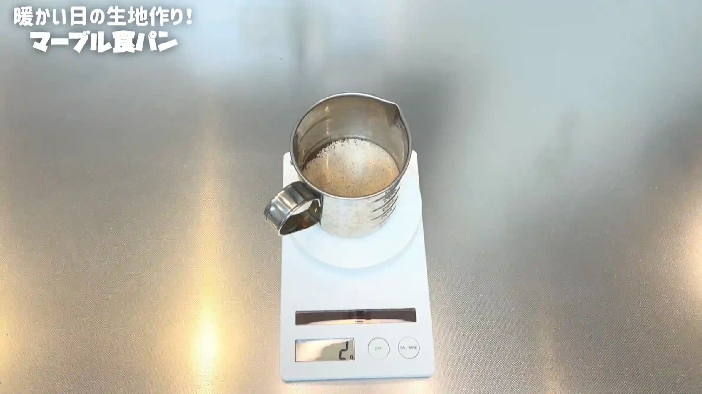
STEP 3
粉類と仕込み水を混ぜる
強力粉と塩を混ぜ合わせ、仕込み水を加えてヘラで1分半ほど混ぜます。粉気がなくなり、ひとまとまりになればOKです。
強力粉と塩を混ぜ合わせ、仕込み水を加えてヘラで1分半ほど混ぜます。粉気がなくなり、ひとまとまりになればOKです。
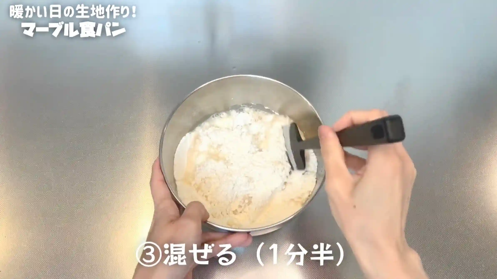
STEP 4
バターを加え、捏ねる（[動画 05:41]）
バターを加え、手で4分捏ねます。生地がベタベタしてまとまらず、表面に粗さが残っていても、ここでは気にせず4分捏ねたら次の工程へ進みます。この後生地を休ませることで、自然と扱いやすくなっていきます。
バターを加え、手で4分捏ねます。生地がベタベタしてまとまらず、表面に粗さが残っていても、ここでは気にせず4分捏ねたら次の工程へ進みます。この後生地を休ませることで、自然と扱いやすくなっていきます。
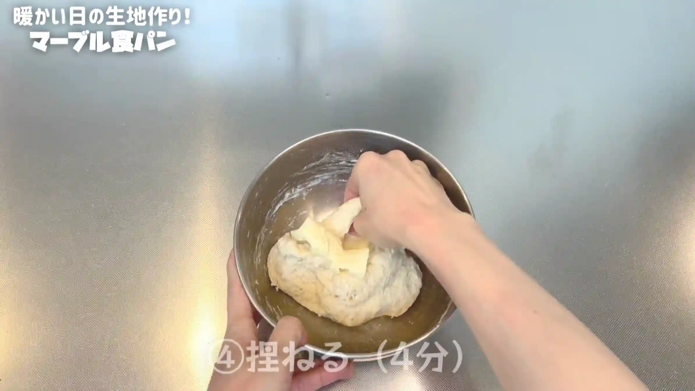
STEP 5
室温で15分おく
乾燥しないようにラップをして、生地を15分休ませます。ここで休ませることで粉が水分を吸い、少しずつ扱いやすくなります。
乾燥しないようにラップをして、生地を15分休ませます。ここで休ませることで粉が水分を吸い、少しずつ扱いやすくなります。
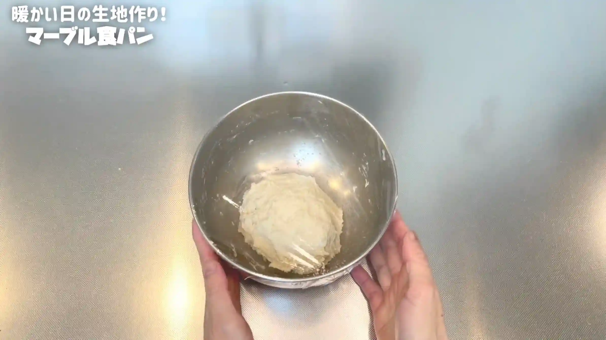
STEP 6
生地をボウルの中で叩く（[動画 06:54]）
生地をボウルの中で1分～2分ほど叩きます。最初は生地がベタつくため、生地をボウルの中に落とすようにして刺激を与えていきます。生地がだんだんとまとまってきたら、ボウルの中で叩き、表面がツルッとなめらかになったら次の工程へ進みます。
生地をボウルの中で1分～2分ほど叩きます。最初は生地がベタつくため、生地をボウルの中に落とすようにして刺激を与えていきます。生地がだんだんとまとまってきたら、ボウルの中で叩き、表面がツルッとなめらかになったら次の工程へ進みます。
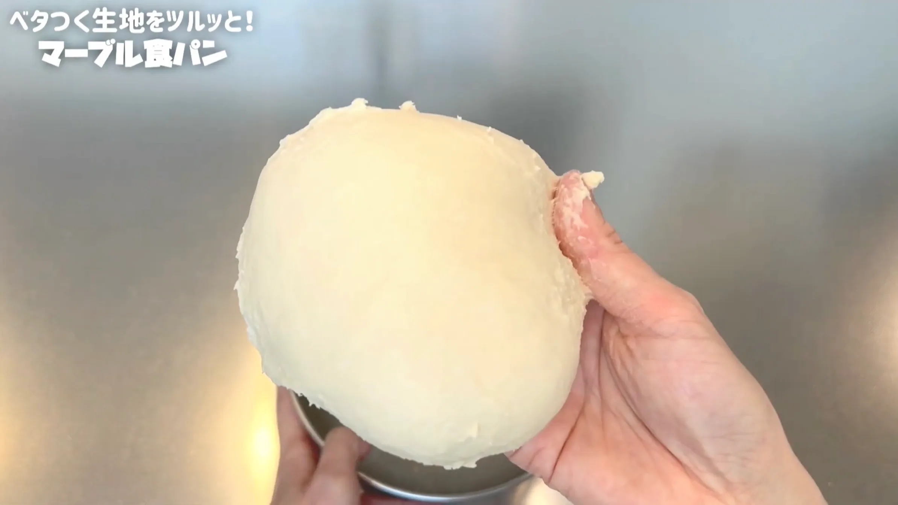
STEP 7
室温で1.5倍に膨らむまでおく
乾燥しないようにラップをして、一次発酵させます。60分ほどを目安に、生地が元の約1.5倍に膨らんだら次の工程へ進みます。発酵時間は室温によって変わるため、生地の膨らみを確認してください。
乾燥しないようにラップをして、一次発酵させます。60分ほどを目安に、生地が元の約1.5倍に膨らんだら次の工程へ進みます。発酵時間は室温によって変わるため、生地の膨らみを確認してください。
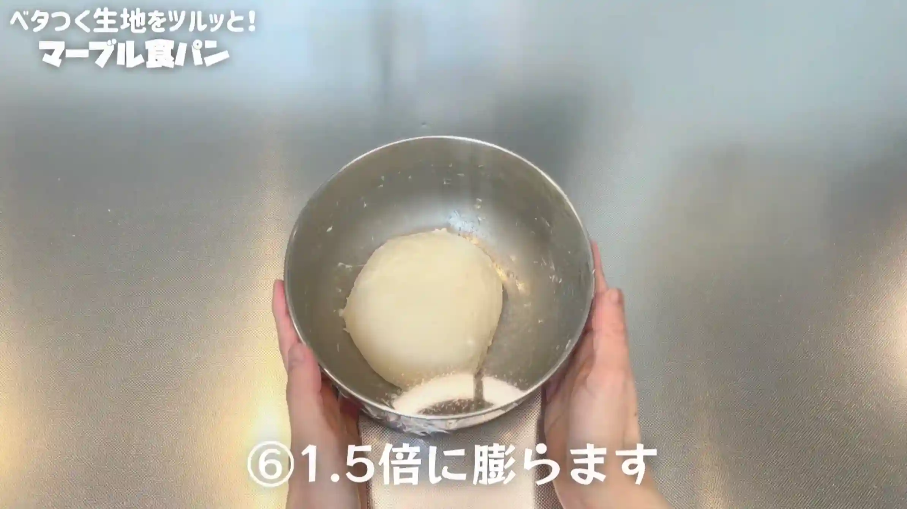
STEP 8
型にバターを塗る
焼き上がったパンを型から取り出しやすくするため、型の内側にバターを塗っておきます。底や側面まで塗り残しがないようにしておきます。
焼き上がったパンを型から取り出しやすくするため、型の内側にバターを塗っておきます。底や側面まで塗り残しがないようにしておきます。
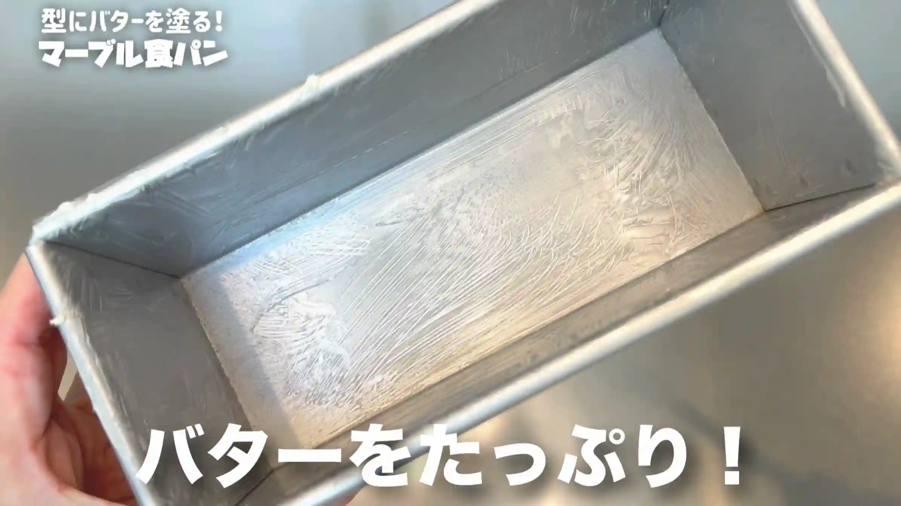
STEP 9
生地を広げて、チョコシートを中央におく
生地をチョコシートの約2倍の大きさまで伸ばし、中央にチョコシートを置きます。折り込みの時に生地の端からチョコがはみ出してこないようにするため、画像のように上下の生地にゆとりをもたせておくのがポイントです。
生地をチョコシートの約2倍の大きさまで伸ばし、中央にチョコシートを置きます。折り込みの時に生地の端からチョコがはみ出してこないようにするため、画像のように上下の生地にゆとりをもたせておくのがポイントです。
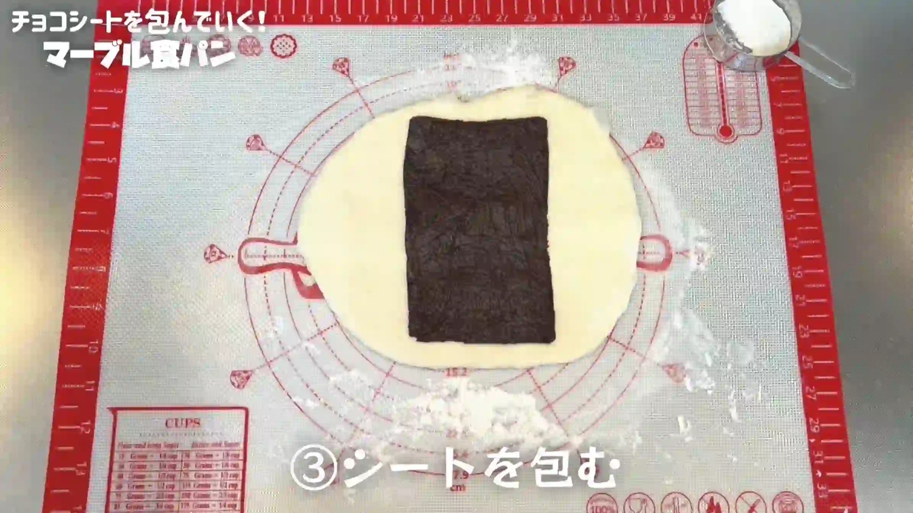
STEP 10
チョコシートを生地で包む
チョコシートを生地で包み、つなぎ目をしっかり閉じます。ここでチョコシートがはみ出さないように包んでおくと、この後の折り込みや伸ばす作業がしやすくなります。
チョコシートを生地で包み、つなぎ目をしっかり閉じます。ここでチョコシートがはみ出さないように包んでおくと、この後の折り込みや伸ばす作業がしやすくなります。
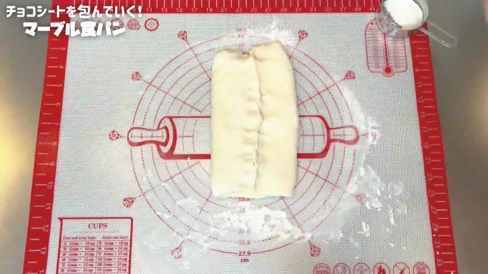
STEP 11
生地を15㎝×40㎝に伸ばす（[動画 09:18]）
包んだ生地を横長の向きに置き、15㎝×40㎝ほどの長方形に伸ばします。最初から強く伸ばそうとせず、めん棒で少しずつ押し広げながら形を整えていきます。この時、チョコシートが全体に広がらず、少し偏っている感じがあっても大丈夫です。この後に折り込みをすることでチョコが重なり、模様ができていくので、気にせずに伸ばしていきます。
包んだ生地を横長の向きに置き、15㎝×40㎝ほどの長方形に伸ばします。最初から強く伸ばそうとせず、めん棒で少しずつ押し広げながら形を整えていきます。この時、チョコシートが全体に広がらず、少し偏っている感じがあっても大丈夫です。この後に折り込みをすることでチョコが重なり、模様ができていくので、気にせずに伸ばしていきます。
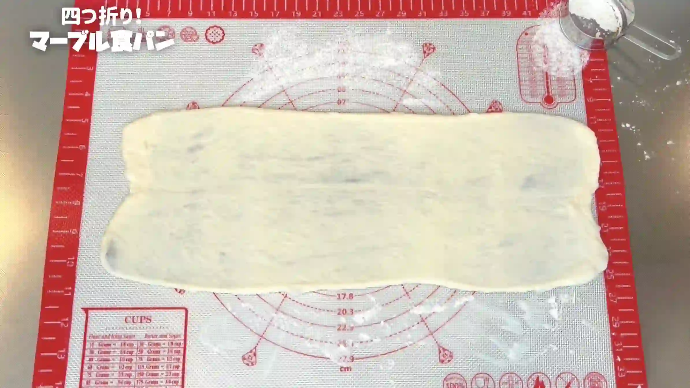
STEP 12
四つ折りする（[動画 10:43]）
伸ばした生地を四つ折りにします。生地の繋ぎ目が中央から少しズレるように折り畳み、その後さらに半分に折り畳みます。とじ目を生地の端に持ってこないことで、この後に生地を伸ばすときにとじ目が開きにくくなります。四つ折りが難しい場合は、三つ折りでもOKです。
伸ばした生地を四つ折りにします。生地の繋ぎ目が中央から少しズレるように折り畳み、その後さらに半分に折り畳みます。とじ目を生地の端に持ってこないことで、この後に生地を伸ばすときにとじ目が開きにくくなります。四つ折りが難しい場合は、三つ折りでもOKです。
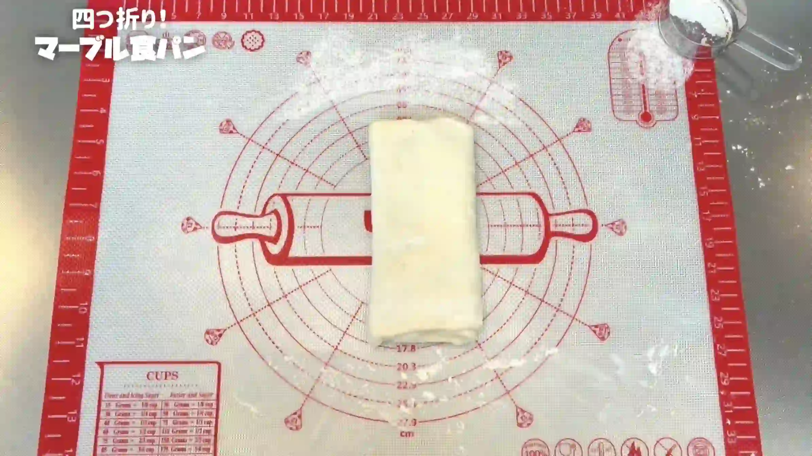
STEP 13
生地を18㎝×35㎝に伸ばす
生地を18㎝×35㎝ほどの長方形に伸ばします。もしチョコがはみ出してきたら、焦らずに打ち粉をします。チョコがめん棒につくと伸ばしにくいため、打ち粉を多めにかけてベタつきをとると、作業しやすくなります。
生地を18㎝×35㎝ほどの長方形に伸ばします。もしチョコがはみ出してきたら、焦らずに打ち粉をします。チョコがめん棒につくと伸ばしにくいため、打ち粉を多めにかけてベタつきをとると、作業しやすくなります。
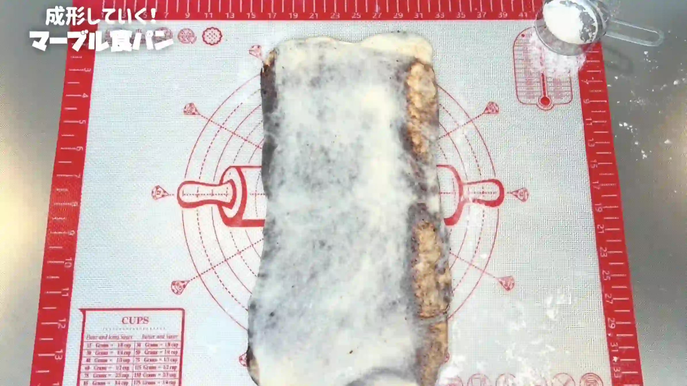
STEP 14
生地の上半分を巻く
生地の上半分を手前に向かって巻いていきます。巻き終わりがほどけてこないように、めん棒で押さえておきます。
生地の上半分を手前に向かって巻いていきます。巻き終わりがほどけてこないように、めん棒で押さえておきます。
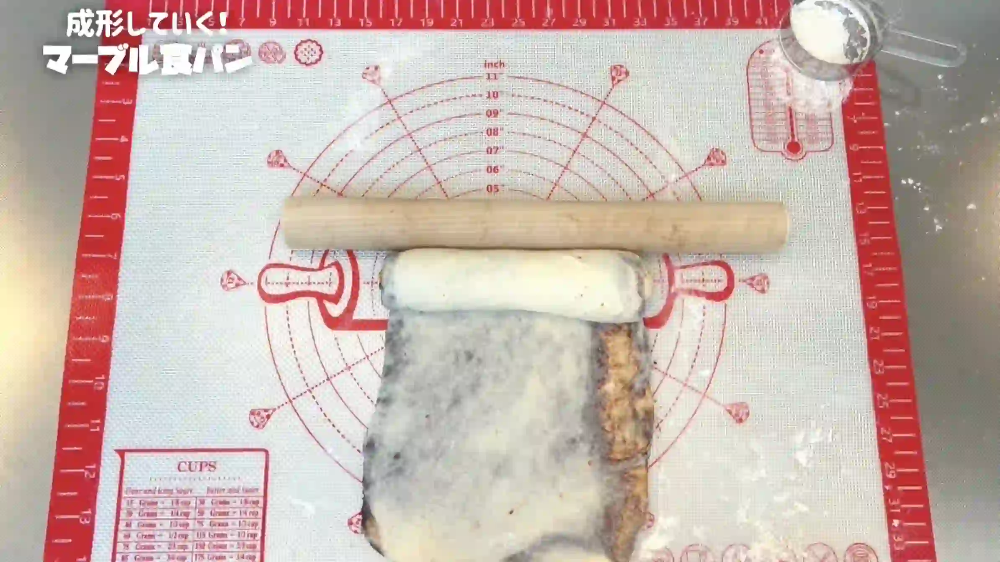
STEP 15
生地の下半分に8等分の切れ目を入れる（[動画 12:34]）
生地の下半分に8等分の切れ目を入れます。切れ目は下を1㎝ほど残し、生地を繋がった状態にしておきます。こうすることで生地がほどけてくるのを防ぎ、型からも生地を取り出しやすくなりました。
生地の下半分に8等分の切れ目を入れます。切れ目は下を1㎝ほど残し、生地を繋がった状態にしておきます。こうすることで生地がほどけてくるのを防ぎ、型からも生地を取り出しやすくなりました。
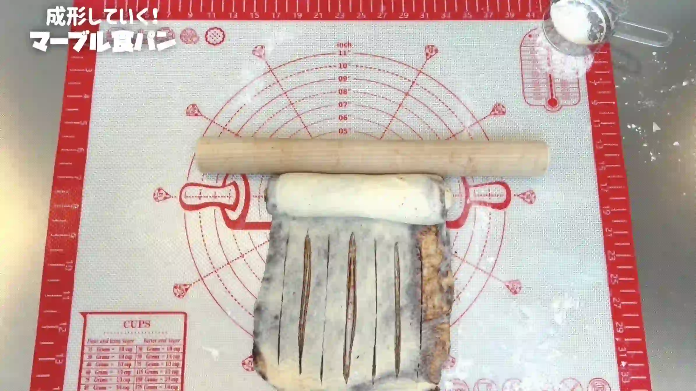
STEP 16
生地を巻き、型に入れる
生地を巻き、巻き終わりを下にして型に入れます。生地が薄めなので、生地とチョコの層をそのまま表面に出すより、ウールロール成形にしてほんのり模様が見えるくらいのほうが可愛く仕上がったのでおすすめです。
生地を巻き、巻き終わりを下にして型に入れます。生地が薄めなので、生地とチョコの層をそのまま表面に出すより、ウールロール成形にしてほんのり模様が見えるくらいのほうが可愛く仕上がったのでおすすめです。
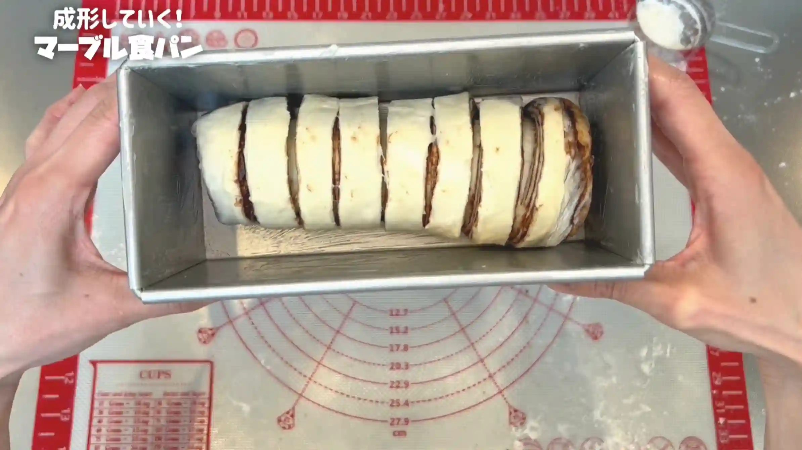
STEP 17
室温で生地がふっくらするまでおく
乾燥しないようにラップをして二次発酵させます。70分ほどを目安に、生地がふっくらと膨らんできたら焼成へ進みます。発酵時間は室温によって変わるため、生地の状態を見ながら調整してください。
乾燥しないようにラップをして二次発酵させます。70分ほどを目安に、生地がふっくらと膨らんできたら焼成へ進みます。発酵時間は室温によって変わるため、生地の状態を見ながら調整してください。
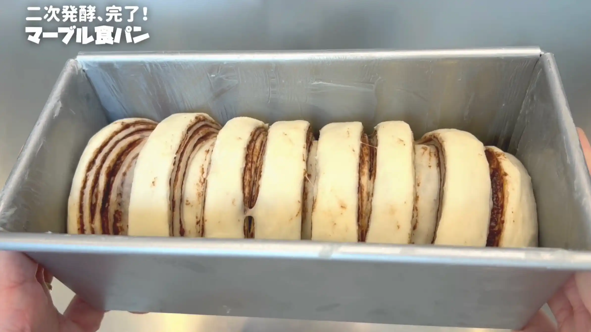
STEP 18
オーブンを250℃に予熱する
焼成前にオーブンを250℃までしっかり予熱しておきます。
焼成前にオーブンを250℃までしっかり予熱しておきます。
STEP 19
牛乳を塗り、オーブン210℃で30分焼く
焼成前に生地の表面へ牛乳を薄く塗り、210℃で30分焼きます。途中で表面に焼き色がついてきたらアルミホイルをかぶせて焼き上げます。焼き時間は目安とし、焼き色を確認しながら、ご家庭のオーブンに合わせて調整してください。
焼成前に生地の表面へ牛乳を薄く塗り、210℃で30分焼きます。途中で表面に焼き色がついてきたらアルミホイルをかぶせて焼き上げます。焼き時間は目安とし、焼き色を確認しながら、ご家庭のオーブンに合わせて調整してください。
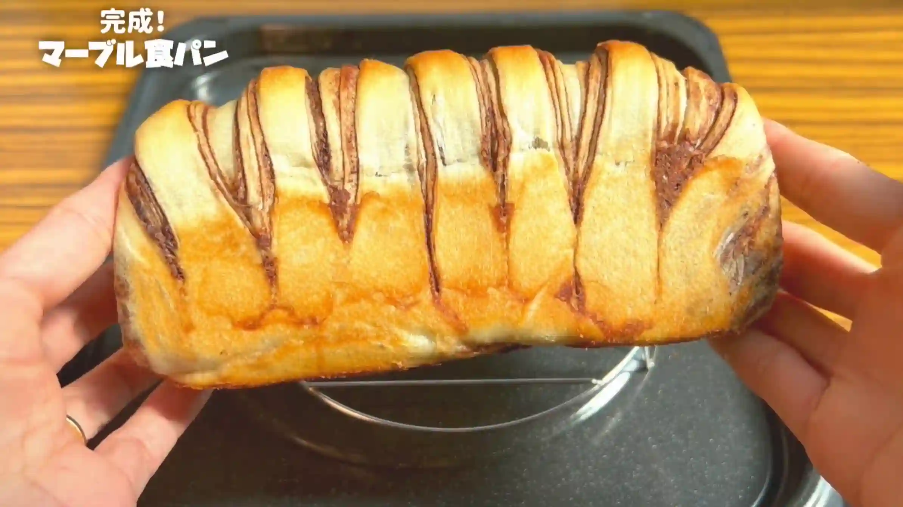
チョコシート
STEP 1
チョコ、ココアパウダー、砂糖、強力粉を混ぜる
細かく刻んだチョコレート、ココアパウダー、砂糖、強力粉を耐熱容器に入れ、しっかり混ぜ合わせます。
細かく刻んだチョコレート、ココアパウダー、砂糖、強力粉を耐熱容器に入れ、しっかり混ぜ合わせます。
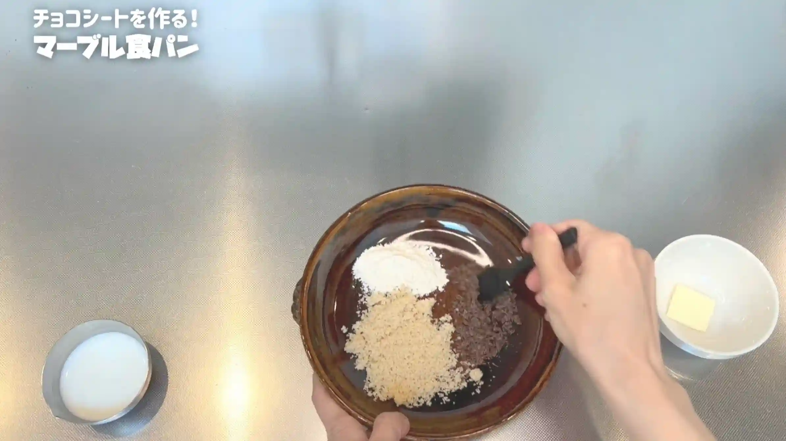
STEP 2
牛乳を加え混ぜる
牛乳を加え、全体が均一になるよう混ぜ合わせます。多少ダマが残っていても、この後レンジで加熱しながら混ぜるので大丈夫です。
牛乳を加え、全体が均一になるよう混ぜ合わせます。多少ダマが残っていても、この後レンジで加熱しながら混ぜるので大丈夫です。
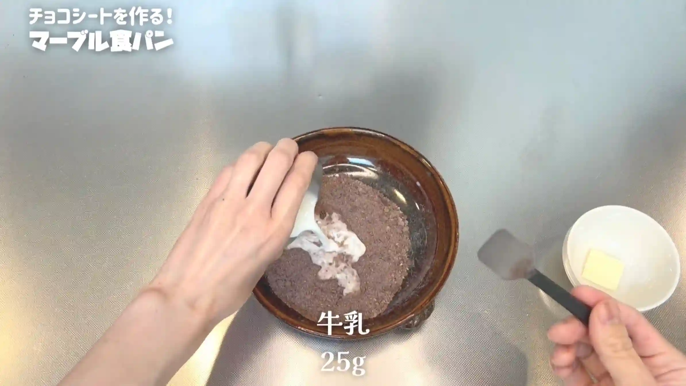
STEP 3
レンジ600Wで加熱して水分を飛ばす
ラップをせずにレンジ600Wで30秒～1分ほど温め、その都度よくかき混ぜます。焦げやすいため、一度に長く加熱せず、様子を見ながら30秒ずつ加熱してください。水分が飛び、画像のようにまとまりのある状態になればOKです。
ラップをせずにレンジ600Wで30秒～1分ほど温め、その都度よくかき混ぜます。焦げやすいため、一度に長く加熱せず、様子を見ながら30秒ずつ加熱してください。水分が飛び、画像のようにまとまりのある状態になればOKです。
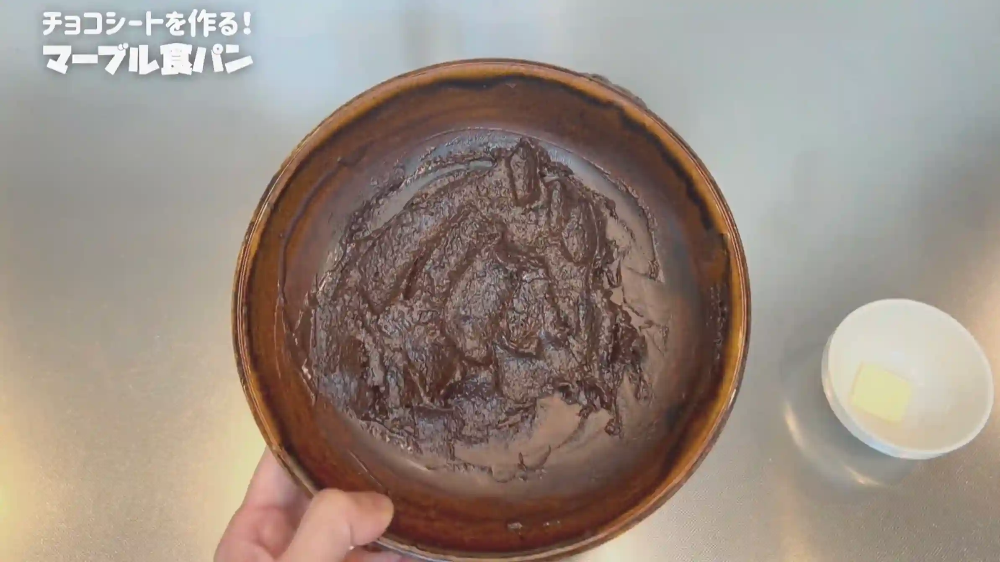
STEP 4
バターを加えて混ぜる
バターを加えて混ぜ合わせます。仕上げにバターを加えることでチョコシートがなめらかになり、生地に合わせて伸ばしやすくなります。
バターを加えて混ぜ合わせます。仕上げにバターを加えることでチョコシートがなめらかになり、生地に合わせて伸ばしやすくなります。
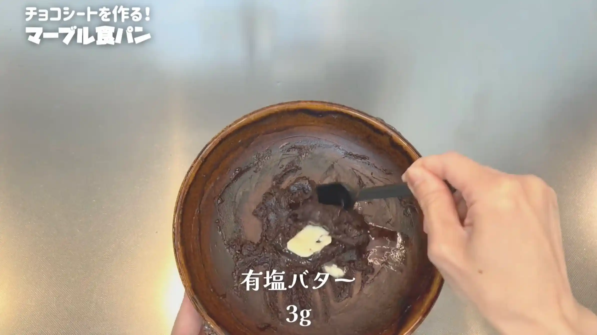
STEP 5
ラップで包み、シート状にする
チョコシートをラップで包み、めん棒で手のひらサイズの長方形に整えます。この後、生地で包みやすいように、できるだけ厚みをそろえておきます。
チョコシートをラップで包み、めん棒で手のひらサイズの長方形に整えます。この後、生地で包みやすいように、できるだけ厚みをそろえておきます。
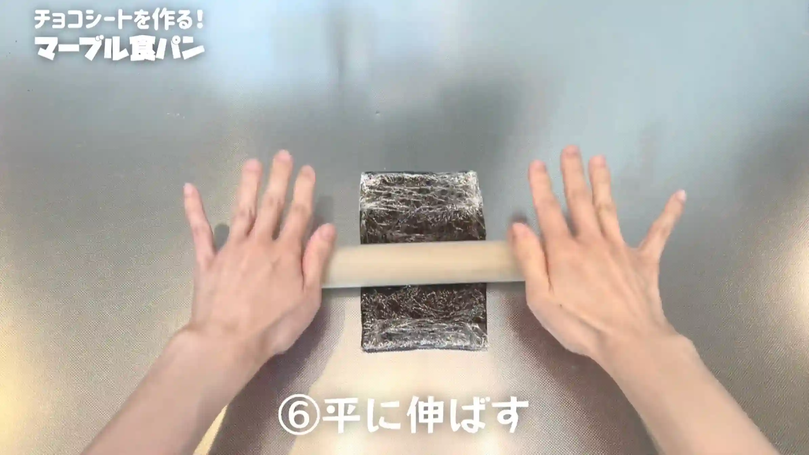
STEP 6
冷蔵する
折り込みに使いやすい硬さになるまで冷蔵します。
折り込みに使いやすい硬さになるまで冷蔵します。
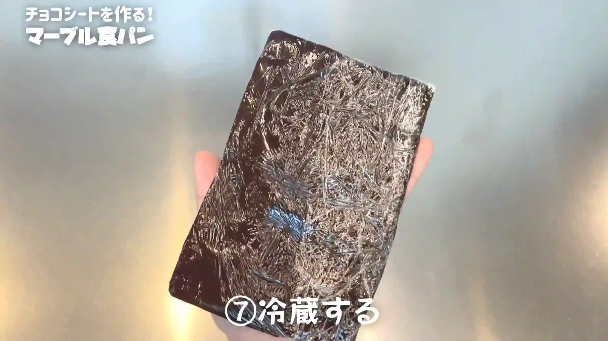
動画でチェック
おいしく作るためのワンポイントコラム
焼き立てのチョコの甘い香りと、サクふわな食感。作るとあっという間になくなってしまう、自慢のレシピです。
パウンド型で焼く『マーブル食パン』は、チョコレート・ココア・強力粉で作る手作りのチョコシートを、生地に折り込んで焼き上げます。おいしく仕上げるための大切なポイントを3つにまとめました。
① 簡単チョコシート
専用のシートを買わなくても、チョコレート、ココア、強力粉を混ぜてレンジで温めるだけで、おうちでも簡単にチョコシートを作ることができます。仕上げにバターを入れてなめらかにするのがコツ。シートが硬くなりすぎず、生地に馴染んで伸ばしやすくなります。レンジにかける時は、焦げないように様子を見ながら温めるのもポイントです。
② ベタつく生地の対処
生地を捏ねても、ベタベタして全然まとまらない時は少し焦ってしまいますが、ここで慌てて粉を足さなくて大丈夫です！ベタついた状態のまま15分間休ませると、粉が水分を吸って自然と扱いやすくなります。そのあと、ボウルの中で生地を1〜2分叩くだけで、驚くほどつるっと綺麗にまとまります。
③ 模様が引き立つ成形
成形は幅の広い切れ目を入れてウールロール風に巻くのがコツです。こうすることで、焼き上がったときにチョコの層が優しく開いて、綺麗なマーブル模様が引き立つ可愛いパンに仕上がります。
焼き上がったパンの断面を見るときのわくわくは格別ですよね！楽しい成形で作る、甘い香りとふわふわのマーブル食パンをぜひお試しください。
パウンド型で焼く『マーブル食パン』は、チョコレート・ココア・強力粉で作る手作りのチョコシートを、生地に折り込んで焼き上げます。おいしく仕上げるための大切なポイントを3つにまとめました。
① 簡単チョコシート
専用のシートを買わなくても、チョコレート、ココア、強力粉を混ぜてレンジで温めるだけで、おうちでも簡単にチョコシートを作ることができます。仕上げにバターを入れてなめらかにするのがコツ。シートが硬くなりすぎず、生地に馴染んで伸ばしやすくなります。レンジにかける時は、焦げないように様子を見ながら温めるのもポイントです。
② ベタつく生地の対処
生地を捏ねても、ベタベタして全然まとまらない時は少し焦ってしまいますが、ここで慌てて粉を足さなくて大丈夫です！ベタついた状態のまま15分間休ませると、粉が水分を吸って自然と扱いやすくなります。そのあと、ボウルの中で生地を1〜2分叩くだけで、驚くほどつるっと綺麗にまとまります。
③ 模様が引き立つ成形
成形は幅の広い切れ目を入れてウールロール風に巻くのがコツです。こうすることで、焼き上がったときにチョコの層が優しく開いて、綺麗なマーブル模様が引き立つ可愛いパンに仕上がります。
焼き上がったパンの断面を見るときのわくわくは格別ですよね！楽しい成形で作る、甘い香りとふわふわのマーブル食パンをぜひお試しください。


今回は、パウンド型を使い、スーパーの身近な材料で焼き上げる「マーブル食パン」のご紹介です！ハードルが高く見えるチョコマーブルですが、おうちでも気楽に作れるとっておきのレシピとなっています。コラムでは「簡単チョコシート」「ベタつく生地の対処」「模様が引き立つ成形」の3つのコツをご紹介します。